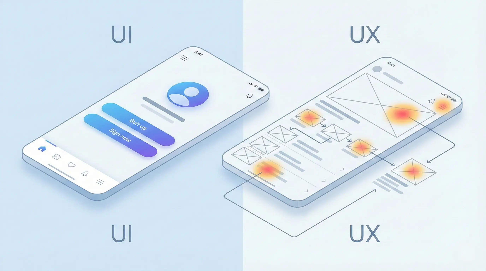
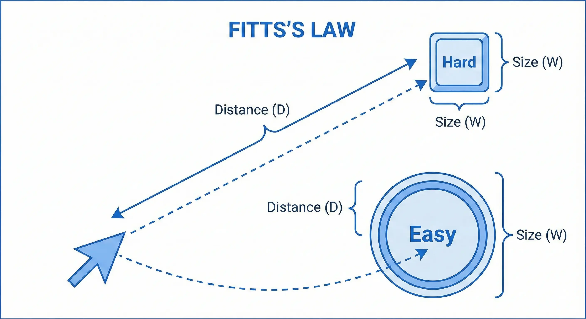
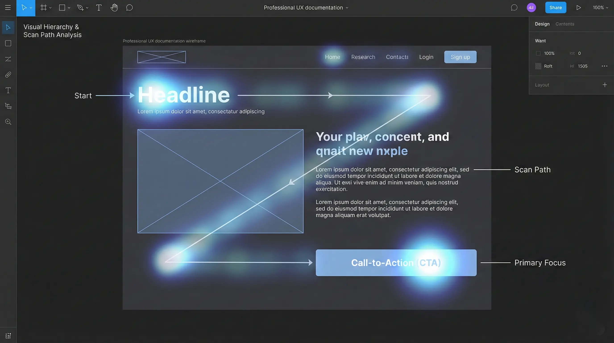
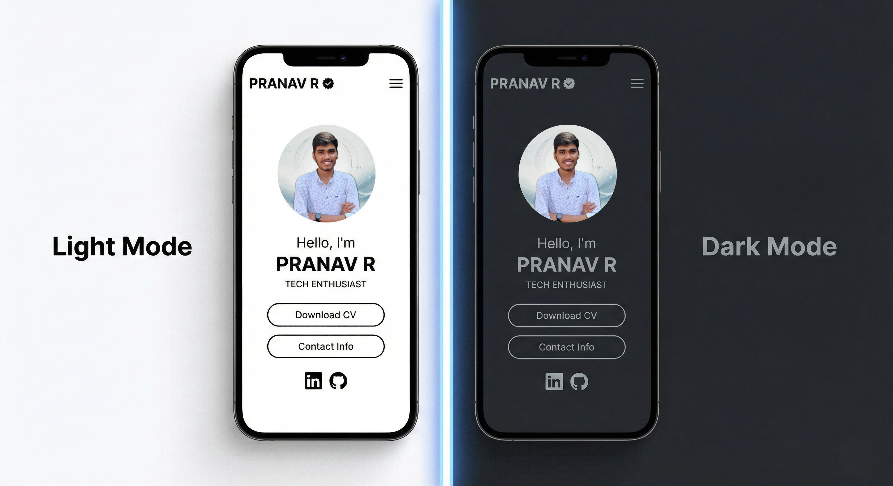

As developers, we often focus on writing clean, efficient code. But what good is a powerful application if users find it confusing or frustrating to use? This is where User Interface (UI) and User Experience (UX) design come in. Understanding these principles is not just for designers—it's a critical skill for any developer who wants to build products that people love.
UI vs. UX: A Quick Clarification
UI (User Interface) refers to the visual elements a user interacts with—buttons, menus, and layouts. UX (User Experience) is the overall feeling a user has while using your application. A beautiful app (good UI) that is confusing to use has bad UX. As a developer, understanding both ensures that what you build is not only functional but also intuitive and enjoyable, which leads to higher user retention and satisfaction.

Table of Contents
Nielsen's 10 Usability Heuristics
Jakob Nielsen's 10 general principles for interaction design are a cornerstone of UX. They are called "heuristics" because they are broad rules of thumb, not specific usability guidelines.
- Visibility of system status: Keep users informed about what is going on through appropriate feedback within a reasonable time. (e.g., loading spinners, success messages).
- Match between system and the real world: Speak the users' language, with words and concepts familiar to the user, rather than system-oriented terms.
- User control and freedom: Users need a clearly marked "emergency exit" to leave an unwanted state. Support undo and redo.
- Consistency and standards: Users should not have to wonder whether different words, situations, or actions mean the same thing. Follow platform conventions.
- Error prevention: Even better than good error messages is a careful design which prevents a problem from occurring in the first place.
- Recognition rather than recall: Minimize the user's memory load by making objects, actions, and options visible.
- Flexibility and efficiency of use: Allow users to tailor frequent actions. Accelerators — unseen by the novice user — may often speed up the interaction for the expert user.
- Aesthetic and minimalist design: Dialogues should not contain information which is irrelevant or rarely needed. Every extra unit of information competes with the relevant units.
- Help users recognize, diagnose, and recover from errors: Error messages should be expressed in plain language, precisely indicate the problem, and constructively suggest a solution.
- Help and documentation: Even though it is better if the system can be used without documentation, it may be necessary to provide help and documentation.
Core Design Laws for Developers
Beyond heuristics, several "laws" of UX can directly inform your coding decisions.
Fitts's Law

The Law: The time to acquire a target is a function of the distance to and size of the target.
For Developers: Make clickable targets, especially on mobile, large enough to be easily tapped. Place related items close to each other. For example, a "Save" button should be near the form fields it relates to, not hidden in a corner of the screen.
Hick's Law
The Law: The time it takes to make a decision increases with the number and complexity of choices.
For Developers: Avoid overwhelming users. If you have a long dropdown menu, consider breaking it into categories or using a search filter. For a complex process, use a multi-step wizard instead of showing all steps on one giant form. This reduces cognitive load and prevents "choice paralysis."
Jakob's Law
The Law: Users spend most of their time on other sites. This means they prefer your site to work the same way as all the other sites they already know.
For Developers: Don't reinvent the wheel for common UI patterns. A shopping cart icon should be in the top-right. A logo should be in the top-left and link to the homepage. Underlined blue text should be a link. By adhering to these conventions, you make your site instantly familiar and easier to use.
Visual Design Principles
These principles help you arrange elements on the screen to create a clear, effective, and aesthetically pleasing interface.
Visual Hierarchy

Visual hierarchy is the arrangement of elements in a way that implies importance. You can guide the user's eye through the page by making the most important elements stand out. Use size (larger is more important), color (bright colors draw attention), and placement (items at the top are seen first) to create a clear path for the user to follow.
Color Theory for Developers
You don't need to be an artist to use color effectively. Stick to the 60-30-10 Rule:
- 60% Primary Color: Usually a neutral color (white, gray, beige) for backgrounds.
- 30% Secondary Color: Your brand color, used for headers, cards, or major sections.
- 10% Accent Color: A bold color (like the blue in my buttons) used strictly for calls-to-action (CTAs) and links.
Also, always check contrast ratios. Text must be readable against its background to meet accessibility standards (WCAG).
Typography Matters
Good typography establishes hierarchy and readability. Don't use more than two font families: one for headings and one for body text. Ensure your line height (leading) is sufficient—usually 1.5 times the font size for body text—to prevent walls of text from looking cramped.
Whitespace (Negative Space)
Whitespace is the empty space between elements. It's not "wasted" space; it's a powerful design tool. Proper use of whitespace reduces clutter, increases legibility, and can be used to group related items together (the Law of Proximity). Giving your elements room to breathe makes your entire design feel more organized and less overwhelming.
Practical Application & Modern Concepts
Mobile-First Design
Instead of designing for desktop and shrinking it down, start with the mobile view. This forces you to prioritize the most essential content. It's easier to scale up a design to a larger screen than to cram a complex desktop interface into a phone screen.
Designing for Dark Mode
Dark mode is more than just inverting colors. It reduces eye strain and saves battery on OLED screens.
- Avoid Pure Black: Use dark gray (e.g.,
#121212) instead of#000000. Pure black can cause "smearing" on some screens and is harsh on the eyes. - Desaturate Colors: Bright, saturated colors vibrate against dark backgrounds. Mute your accent colors to make them legible.
- Elevation via Lightness: In light mode, we use shadows to show depth. In dark mode, use lighter shades of gray to indicate elevated surfaces (like cards or modals).

Accessibility (A11y)
Design for everyone. Accessibility means ensuring your application is usable by people with disabilities, such as those who use screen readers or rely on keyboard navigation. This is not an optional extra; it's a core part of professional development.
- Semantic HTML: Use tags like
<nav>,<main>, and<button>for their correct purpose. - ARIA Roles: Use Accessible Rich Internet Applications (ARIA) attributes to provide extra context where HTML can't, like
aria-labelfor icon-only buttons. - Focus Management: Ensure the keyboard focus order is logical and that focus states are clearly visible.
Conclusion
You don't need to be a professional designer to create a great user experience. By keeping these ten key principles in mind—from Clarity and Consistency to Error Prevention and Accessibility—you can build applications that are not only powerful but also a pleasure to use.
Further Learning
To dive deeper, explore tools like Figma for prototyping, read articles from the Nielsen Norman Group, or study the official WCAG guidelines. Check out my Personal Portfolio project for a practical example!
Have questions about UI/UX design? Reach out via the contact form below or explore my other blog posts for additional insights!
Note: This article was written with the assistance of AI tools. Some images used in this post are AI-generated.